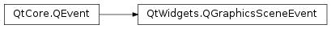

QGraphicsSceneEvent¶
Inherited by: QGraphicsSceneMouseEvent, QGraphicsSceneWheelEvent, QGraphicsSceneContextMenuEvent, QGraphicsSceneHoverEvent, QGraphicsSceneDragDropEvent, QGraphicsSceneHelpEvent, QGraphicsSceneResizeEvent, QGraphicsSceneMoveEvent
Detailed Description¶
The
PySide2.QtWidgets.QGraphicsSceneEventclass provides a base class for all graphics view related events.When a
PySide2.QtWidgets.QGraphicsViewreceives Qt mouse, keyboard, and drag and drop events (PySide2.QtGui.QMouseEvent,PySide2.QtGui.QKeyEvent, QDragEvent, etc.), it translates them into instances ofPySide2.QtWidgets.QGraphicsSceneEventsubclasses and forwards them to thePySide2.QtWidgets.QGraphicsSceneit displays. The scene then forwards the events to the relevant items.For example, when a
PySide2.QtWidgets.QGraphicsViewreceives aPySide2.QtGui.QMouseEventof type MousePress as a response to a user click, the view sends aPySide2.QtWidgets.QGraphicsSceneMouseEventof typeGraphicsSceneMousePressto the underlyingPySide2.QtWidgets.QGraphicsScenethrough itsPySide2.QtWidgets.QGraphicsScene.mousePressEvent()function. The defaultQGraphicsScene.mousePressEvent()implementation determines which item was clicked and forwards the event toQGraphicsItem.mousePressEvent().Subclasses such as
PySide2.QtWidgets.QGraphicsSceneMouseEventandPySide2.QtWidgets.QGraphicsSceneContextMenuEventprovide the coordinates from the originalPySide2.QtCore.QEventin screen, scene, and item coordinates (seePySide2.QtWidgets.QGraphicsSceneMouseEvent.screenPos(),PySide2.QtWidgets.QGraphicsSceneMouseEvent.scenePos(), andPySide2.QtWidgets.QGraphicsSceneMouseEvent.pos()). The item coordinates are set by thePySide2.QtWidgets.QGraphicsScenebefore it forwards the event to the event to aPySide2.QtWidgets.QGraphicsItem. The mouse events also add the possibility to retrieve the coordinates from the last event received by the view (seePySide2.QtWidgets.QGraphicsSceneMouseEvent.lastScreenPos(),PySide2.QtWidgets.QGraphicsSceneMouseEvent.lastScenePos(), andPySide2.QtWidgets.QGraphicsSceneMouseEvent.lastPos()).See also
-
class
PySide2.QtWidgets.QGraphicsSceneEvent(type)¶ Parameters: type – PySide2.QtCore.QEvent.TypeConstructs a generic graphics scene event of the specified
type.
-
PySide2.QtWidgets.QGraphicsSceneEvent.widget()¶ Return type: PySide2.QtWidgets.QWidgetReturns the widget where the event originated, or 0 if the event originates from another application.
© 2018 The Qt Company Ltd. Documentation contributions included herein are the copyrights of their respective owners. The documentation provided herein is licensed under the terms of the GNU Free Documentation License version 1.3 as published by the Free Software Foundation. Qt and respective logos are trademarks of The Qt Company Ltd. in Finland and/or other countries worldwide. All other trademarks are property of their respective owners.